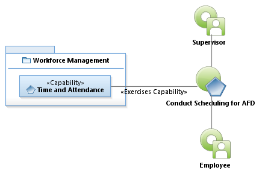
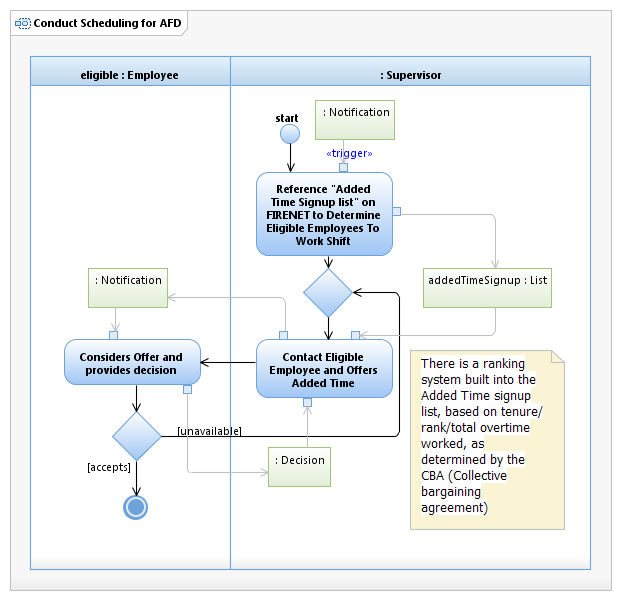

Use Case Model: Conduct Scheduling for AFD
Architect: Aaron Brown, IT Enterprise Architect
Date Last Modified: 04/10/2013
User Review: Carlyn Cheney
Date: 04/10/2013
AFD assigns employees to a specific firestation, at a specific Shift (A, B or C) and this never changes, unless the employee is reassigned. Should an employee be unable to work their slot, they call the supervisor who will locate a a replacement.
Follow link to Role Definitions

Use Case Model: Conduct Scheduling for AFD

Activity Model: Conduct Scheduling for AFD